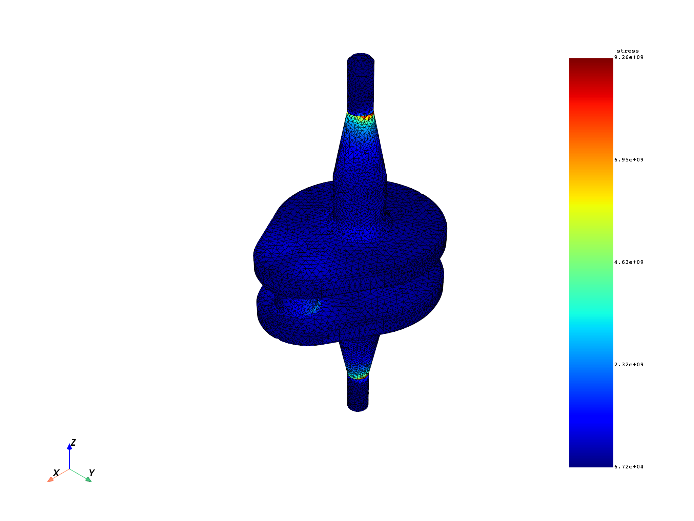
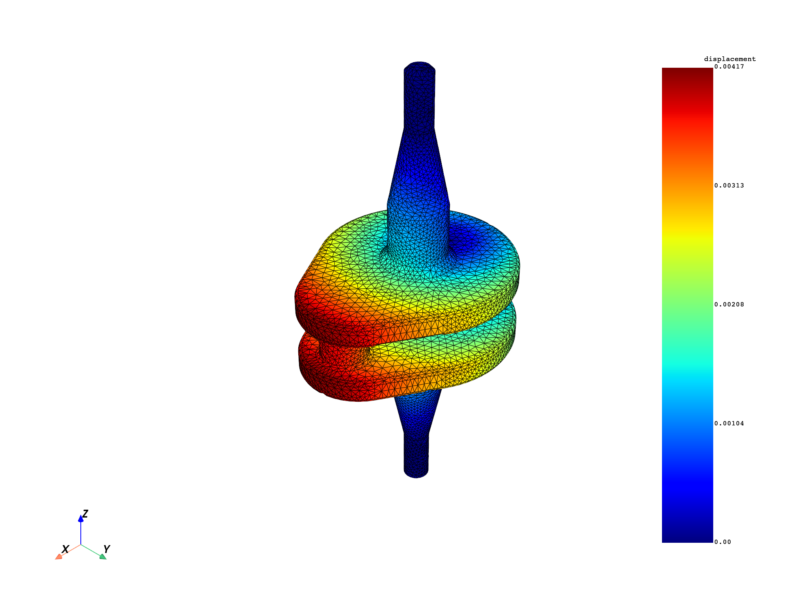
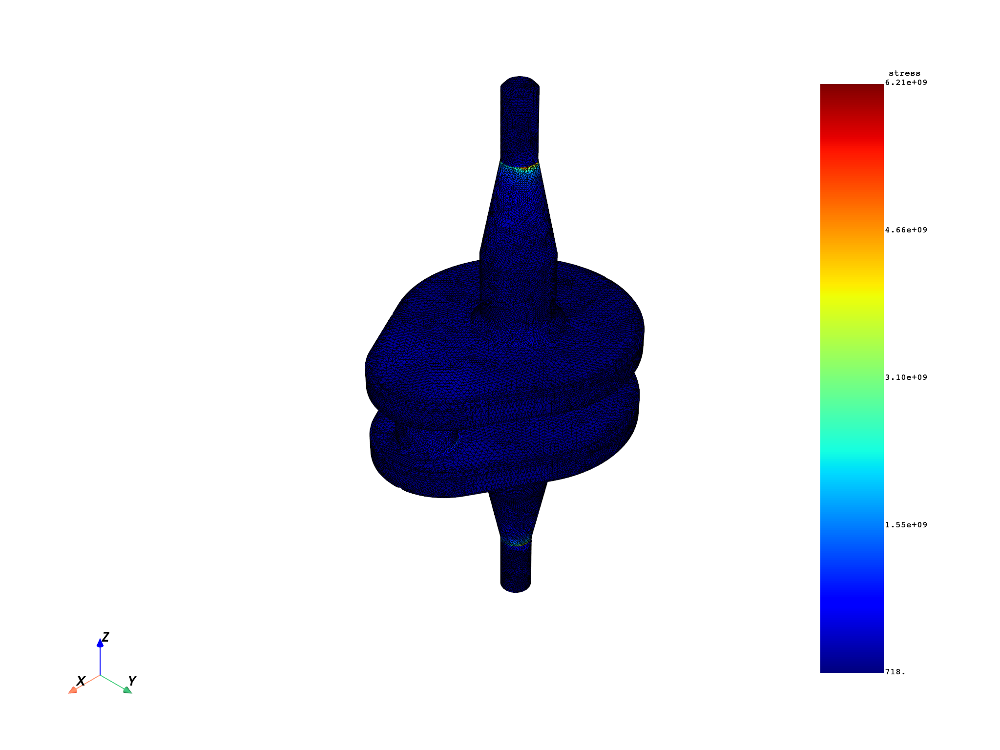

Note
Go to the end to download the full example code.
Solid-to-skin mapping#
Transfer field data from a volume mesh to a surface mesh.
This tutorial demonstrates how to use the
solid_to_skin operator to map
field data defined on solid (volume) elements to field data on skin (surface) elements.
This is useful for visualizing or analyzing results on the external surface of a model,
or for transferring data between different mesh representations.
The operator supports three field data locations:
Elemental: Values from solid elements are copied to the overlying skin elements.
Nodal: The field is rescoped to the nodes of the skin mesh.
ElementalNodal: Values are copied for each element face and its associated nodes.
The example file used is a crankshaft model with 39 315 solid elements and 3 time steps.
Import modules and load the model#
Import the required modules and load a result file.
# Import the ``ansys.dpf.core`` module
from ansys.dpf import core as dpf
# Import the examples and operators modules
from ansys.dpf.core import examples, operators as ops
Load model#
Download the crankshaft result file and create a
Model object.
The model contains a static structural analysis of a crankshaft with
39 315 solid elements and 3 time steps.
result_file = examples.download_crankshaft()
model = dpf.Model(data_sources=result_file)
print(model)
DPF Model
------------------------------
Static analysis
Unit system: MKS: m, kg, N, s, V, A, degC
Physics Type: Mechanical
Available results:
- node_orientations: Nodal Node Euler Angles
- displacement: Nodal Displacement
- velocity: Nodal Velocity
- acceleration: Nodal Acceleration
- reaction_force: Nodal Force
- stress: ElementalNodal Stress
- elemental_volume: Elemental Volume
- stiffness_matrix_energy: Elemental Energy-stiffness matrix
- artificial_hourglass_energy: Elemental Hourglass Energy
- kinetic_energy: Elemental Kinetic Energy
- co_energy: Elemental co-energy
- incremental_energy: Elemental incremental energy
- thermal_dissipation_energy: Elemental thermal dissipation energy
- elastic_strain: ElementalNodal Strain
- elastic_strain_eqv: ElementalNodal Strain eqv
- element_orientations: ElementalNodal Element Euler Angles
- structural_temperature: ElementalNodal Structural temperature
------------------------------
DPF Meshed Region:
69762 nodes
39315 elements
Unit: m
With solid (3D) elements
------------------------------
DPF Time/Freq Support:
Number of sets: 3
Cumulative Time (s) LoadStep Substep
1 1.000000 1 1
2 2.000000 1 2
3 3.000000 1 3
Extract the solid mesh#
Retrieve the full volume mesh of the crankshaft and visualize its geometry.
solid_mesh = model.metadata.meshed_region
print(f"Total elements: {solid_mesh.elements.n_elements}")
print(f"Total nodes: {solid_mesh.nodes.n_nodes}")
solid_mesh.plot(title="Crankshaft solid mesh")

Total elements: 39315
Total nodes: 69762
([], <pyvista.plotting.plotter.Plotter object at 0x0000019AB12F04D0>)
Create the skin mesh#
Build a skin mesh representing the external surface of the model using the
skin operator. Unlike external_layer, the skin operator includes
the facets and facets_to_ele property fields that link each surface
element back to its parent solid element—these are required by solid_to_skin.
skin_mesh_op = ops.mesh.skin(mesh=solid_mesh)
skin_mesh = skin_mesh_op.outputs.mesh()
print(f"Skin elements: {skin_mesh.elements.n_elements}")
print(f"Solid elements: {solid_mesh.elements.n_elements}")
print(f"Skin nodes: {skin_mesh.nodes.n_nodes}")
print(f"Solid nodes: {solid_mesh.nodes.n_nodes}")
skin_mesh.plot(title="Crankshaft skin mesh")

Skin elements: 16460
Solid elements: 39315
Skin nodes: 32922
Solid nodes: 69762
([], <pyvista.plotting.plotter.Plotter object at 0x0000019AADFE1210>)
Map elemental stress to the skin mesh#
Retrieve element-averaged stress on the solid mesh and transfer it to skin elements. The result is evaluated at the last available time step (time set 3).
stress_elemental_fc = model.results.stress.on_location(dpf.locations.elemental).eval()
stress_elemental_field = stress_elemental_fc[0]
mapped_stress_op = ops.mapping.solid_to_skin(
field=stress_elemental_field,
mesh=skin_mesh,
solid_mesh=solid_mesh,
)
mapped_stress_field = mapped_stress_op.eval()
print(
f"Solid elements: {len(stress_elemental_field.data)}, skin elements: {len(mapped_stress_field.data)}"
)
skin_mesh.plot(
field_or_fields_container=mapped_stress_field, title="Elemental stress on crankshaft skin"
)

Solid elements: 39315, skin elements: 16460
(None, <pyvista.plotting.plotter.Plotter object at 0x0000019AB12ACCD0>)
Map nodal displacement to the skin mesh#
Transfer nodal displacement from the solid mesh to the skin mesh. The field is rescoped to the nodes that belong to the skin mesh.
displacement_fc = model.results.displacement.eval()
displacement_field = displacement_fc[0]
mapped_displacement_op = ops.mapping.solid_to_skin(
field=displacement_field,
mesh=skin_mesh,
solid_mesh=solid_mesh,
)
mapped_displacement_field = mapped_displacement_op.eval()
print(
f"Solid nodes: {len(displacement_field.scoping)}, skin nodes: {len(mapped_displacement_field.scoping)}"
)
skin_mesh.plot(
field_or_fields_container=mapped_displacement_field,
title="Nodal displacement on crankshaft skin",
)

Solid nodes: 69762, skin nodes: 32922
(None, <pyvista.plotting.plotter.Plotter object at 0x0000019AAF588110>)
Map elemental-nodal stress to the skin mesh#
For ElementalNodal data, values are copied for each skin element face
together with its associated nodes.
stress_en_fc = model.results.stress.on_location(dpf.locations.elemental_nodal).eval()
stress_en_field = stress_en_fc[0]
mapped_stress_en_field = ops.mapping.solid_to_skin(
field=stress_en_field,
mesh=skin_mesh,
solid_mesh=solid_mesh,
).eval()
skin_mesh.plot(
field_or_fields_container=mapped_stress_en_field,
title="ElementalNodal stress on crankshaft skin",
)

(None, <pyvista.plotting.plotter.Plotter object at 0x0000019AB25B9E50>)
Omit the solid mesh when it is available from the field support#
If the field already carries its supporting mesh, the solid_mesh pin can
be omitted—the operator reads it directly from the field support.
stress_fc = model.results.stress.eval()
stress_field_solid = stress_fc[0]
mapped_stress_simple = ops.mapping.solid_to_skin(
field=stress_field_solid,
mesh=skin_mesh,
).eval()
skin_mesh.plot(
field_or_fields_container=mapped_stress_simple,
title="Stress mapped to skin (mesh from field support)",
)
(None, <pyvista.plotting.plotter.Plotter object at 0x0000019AACA7E6D0>)
Use with FieldsContainer#
The operator also accepts a
FieldsContainer
containing a single field.
This is useful when your workflow already produces a FieldsContainer
(for example, from a preceding operator) and you want to pass it directly.
# Retrieve all three time steps and pick the first one
stress_fc_all = model.results.stress.on_all_time_freqs().eval()
stress_field_t1 = stress_fc_all[0]
single_field_fc = dpf.FieldsContainer()
single_field_fc.labels = ["time"]
single_field_fc.add_field(label_space={"time": 1}, field=stress_field_t1)
mapped_fc = ops.mapping.solid_to_skin(
field=single_field_fc,
mesh=skin_mesh,
solid_mesh=solid_mesh,
).eval()
skin_mesh.plot(
field_or_fields_container=mapped_fc,
title="Stress at time step 1 mapped from FieldsContainer",
)

(None, <pyvista.plotting.plotter.Plotter object at 0x0000019AB124A8D0>)
Total running time of the script: (0 minutes 29.563 seconds)